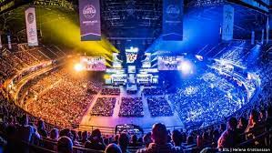
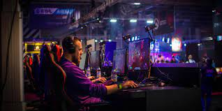
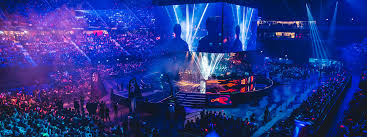

Esports (also known as electronic sports, e-sports, or eSports) is a form of competition using video games.Esports often takes the form of organized, multiplayer video game competitions, particularly between professional players, individually or as teams. Although organized competitions have long been a part of video game culture, these were largely between amateurs until the late 2000s, when participation by professional gamers and spectatorship in these events through live streaming saw a large surge in popularity. By the 2010s, esports was a significant factor in the video game industry, with many game developers actively designing and providing funding for tournaments and other events.
 By the late 2010s, it was estimated that the total audience of esports would grow to 454 million viewers, with revenue increasing to more than US$1 billion. The increasing availability of online streaming media like YouTube and Twitch have become central to the growth and promotion of esports competitions. Despite viewership being approximately 85% male and 15% female, with a majority of viewers between 18 and 34.
LIKE JOINDISCORD